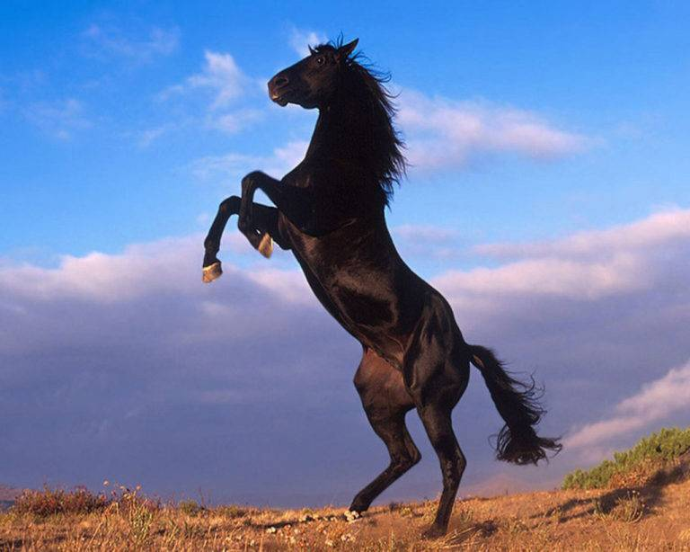
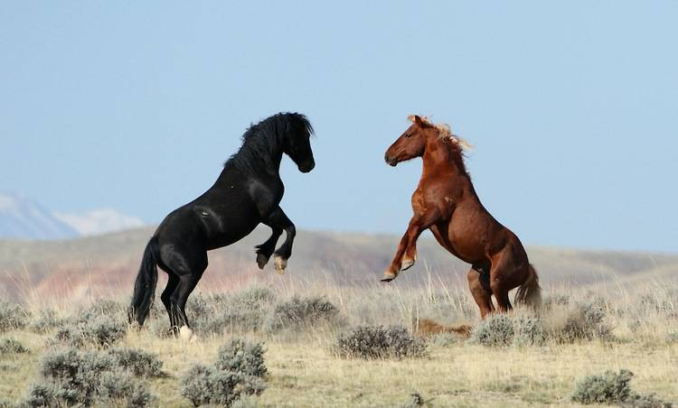
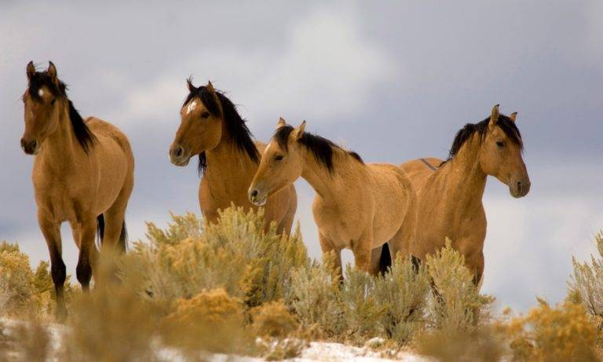
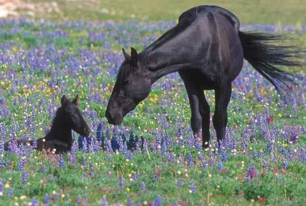
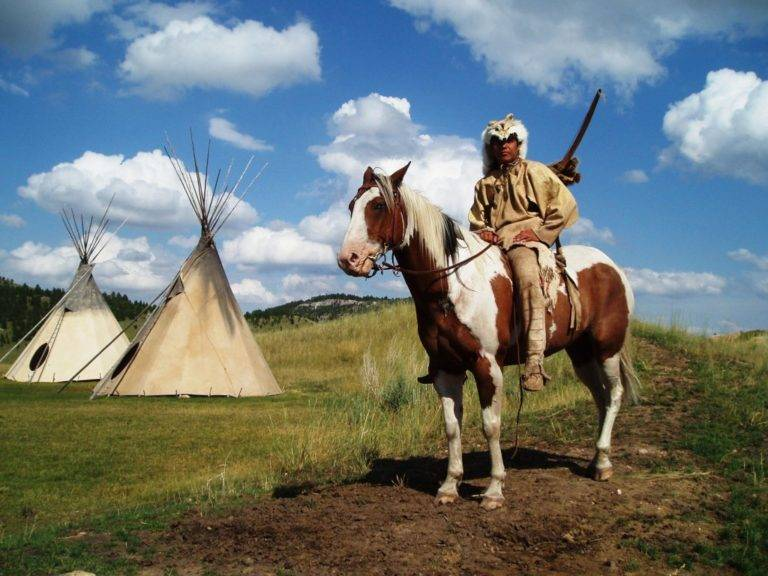
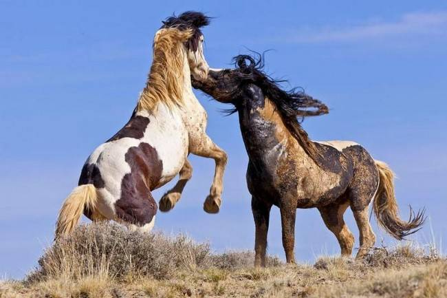
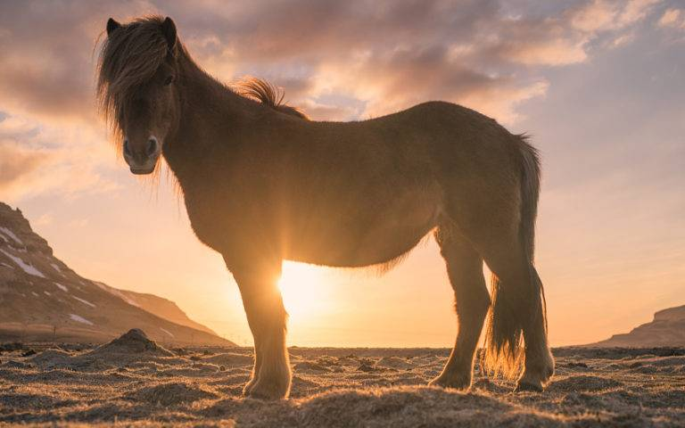
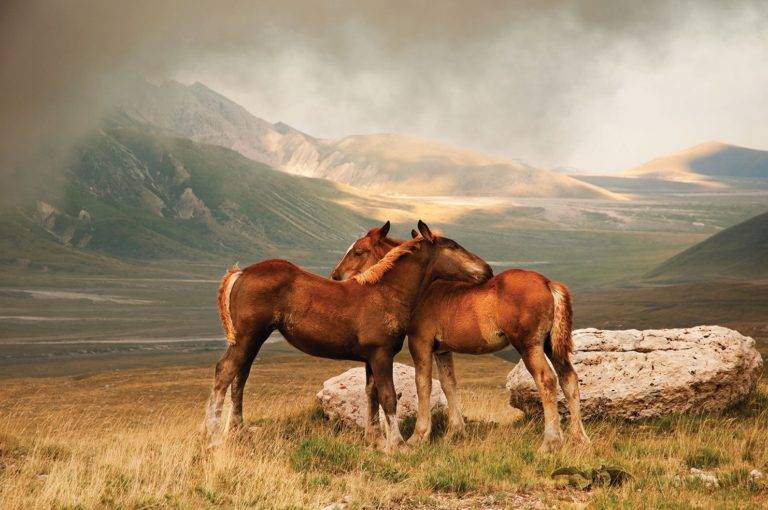

Мустанг (Equus ferus caballus) — дикая лошадь, которая ранее была домашней. Дикие лошади мустанги относятся к классу млекопитающие, отряду непарнокопытные, семейству лошадиные, роду лошади.

В холке мустанг достигает 150 сантиметров, а весит около 400 килограмм. В силу большого кровосмешения, дикие лошади мустанги могут быть совершенно любой расцветки: красновато-коричневой, гнедой, коричневой или черной. Средняя продолжительность жизни диких мустангов около 30 лет. От других пород лошадей мустангов отличает короткое туловище и сильные ноги. Лошадь мустанг — животное чистоплотное, с чистым кожным покровом и длинной блестящей гривой.

Предками мустангов являются одичавшие лошади испанских завоевателей. В шестнадцатом веке они были завезены колонистами в Северную и Южную Америку. Лошадей, которые хромали или больше не могли пригодиться, отпускали на волю. Некоторые лошади сбегали с пастбищ или были оставлены на произвол судьбы.
Сначала индейцы использовали найденных мустангов только в пищу, но позже научились ездить на них, и лошади стали для них больше, чем едой. Этот народ считал, что если у коня мустанга есть пятно на груди и голове, значит, животное священно и принесет победу в бою. Такие лошади индейцев становились талисманами для них.

На воле дикие мустанги собираются в табуны, они не живут в одиночку. Лошадь без стада совершенно беззащитна перед хищниками. Табуны выбирают себе местность и пасутся на ней. Они могут соседствовать с другим табуном, а в случае опасности даже объединиться с ним. Стадо состоит из жеребца и его гарема, особей может насчитываться от 2 до 18. В табун также входят молодые лошади и маленькие жеребята. В стаде есть кобыла-проводница и главный жеребец. Дикая кобыла уводит стадо в безопасное место, если наступит опасная ситуация, а жеребец храбро обороняется, мешая врагам пуститься вслед за табуном. При нападении хищников дикие лошади мустанги образуют кольцо, внутри которого помещают жеребят и отбиваются копытами от волков, койотов или других хищников. Друг друга они предупреждают громким фырканьем, а общаются с помощью ржания.

Лошади мустанги обитают в степях Южной Америки и некоторых прериях Северной Америки. Но численность этих животных очень сократилась, они практически истреблены. Диких лошадей мустангов по нынешний день используют индейцы как средство передвижения. В силу большой выносливости дикие кони мустанги способны преодолевать большие расстояния.


Мустанг — животное травоядное, питается подножным кормом. В природе эти лошади едят траву, листья мелких кустарников. В силу того, что большая часть территории Америки имеет небогатую растительность, диким коням приходится проходить сотни километров в поисках пищи. В летний период мустанг пьет около 60 литров жидкости, зимой потребность снижается до 30 литров.

